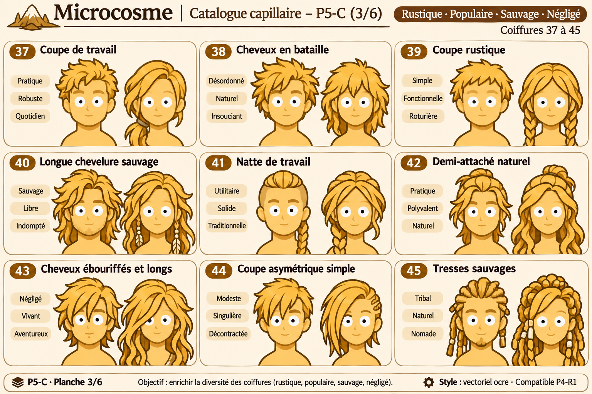
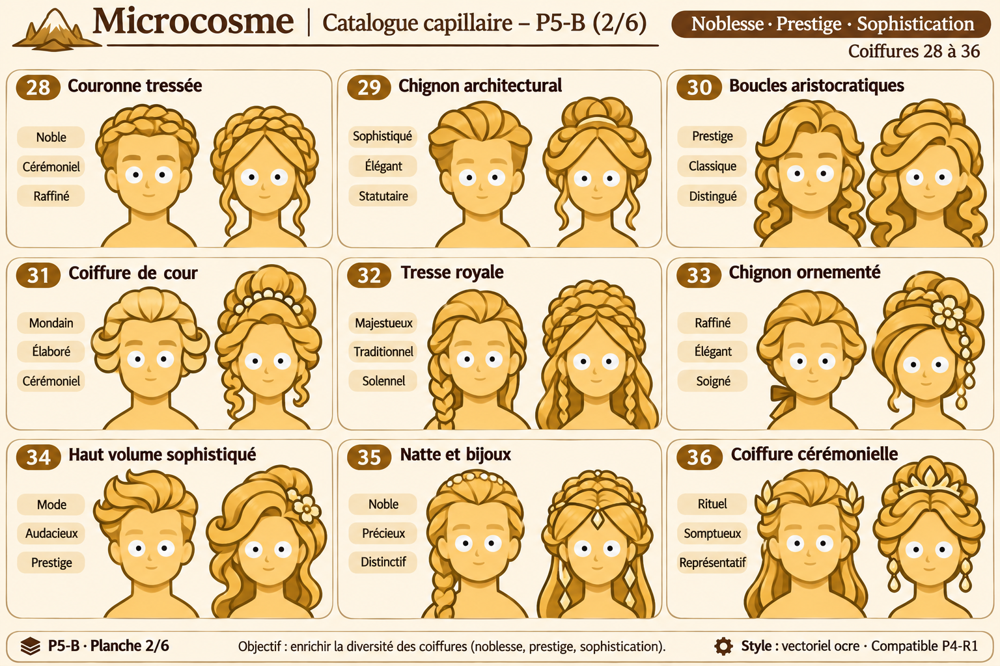
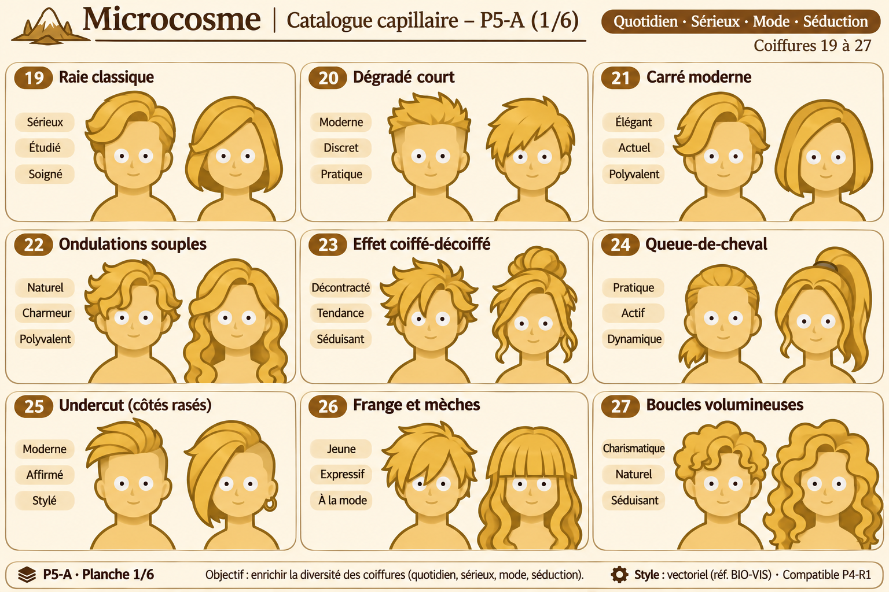
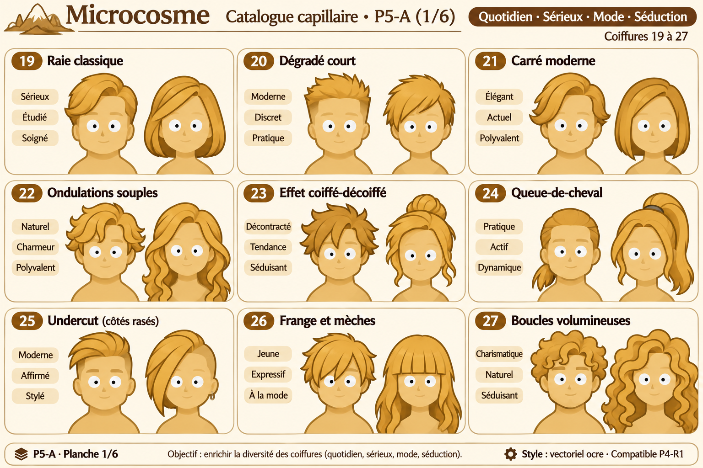

Petite échelle
Observez les racines, les longueurs et le passage autour des épaules. Les limites de superposition restent visibles. Comparaisons des six corps.
LA PLANCHE C
37–45 · les deux illustrations
Chaque paire garde ses deux arrangements.
Les réglages courants s’appliquent à la galerie.
Lot B · 28–36 · les 18 arrangements conservés
Lot A · 19–27 · les 18 arrangements conservés
Les 18 coiffures P4-R1 · comparaison
Références et périmètre
Les planches fournissent les cheveux uniquement. Les visages, proportions, corps et aplats restent ceux de P4-R1. Le lot C expérimental n’est pas encore validé graphiquement.
Planche P5-C · source du lot actuel

Planche P5-B · lot conservé

Planche P5-A · source principale

P5-A · seconde image conservée

Catalogue V1 · base existante

Planche originale des habitants